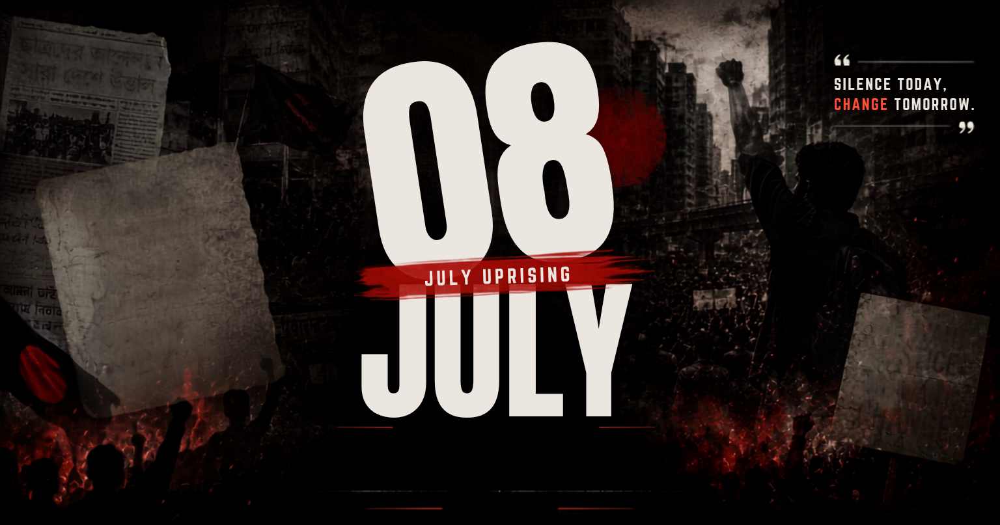

ISTIACK'S JULY CORNER
Read in Bangla
Read in Bangla

Share
Print
Select Print Language
English Only
Bangla Only
Both (English & Bangla)
Cancel
Link Copied!
 ISTIACK'S JULY CORNER
ISTIACK'S JULY CORNER
ISTIACK'S JULY CORNER
ISTIACK'S JULY CORNER